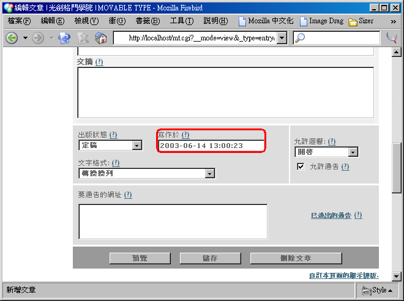
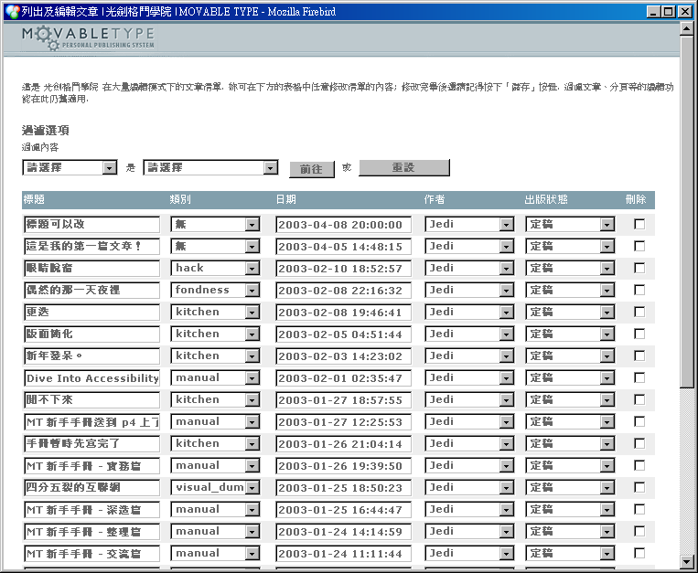
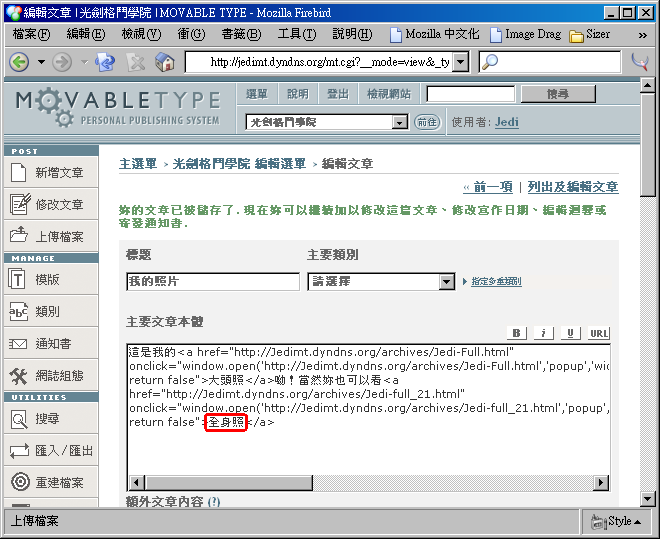

圖四十六：原來的字串前後多了表示鏈結的 HTML 標籤，而反白也消失了。
現在請把這一篇文章儲存起來，並且檢視網站。妳應該可以看到如圖四十七的畫面，剛剛妳所選取起來的字串真的可以連結到其他地方了。圖四十七：「這是在 MT 完全手冊裡的鏈結範例」這個句子裡，果然祇有「 MT 完全手冊」這個字串具有超連結的效果，而且會連結到 http://mtbook.net/mtbook.html 去。
補充資訊
請注意：為了避免在某些瀏覽器上發生未知的解讀錯誤，同時為了盡量吻合國際標準，妳應該把所有的「 & 」通通寫作「 & 」，然後把「 < 」寫作「 < 」、把「 > 」寫作「 > 」、把「 " 」寫作「 " 」。
對這個部分有興趣的人還可以參考 Movable Type 使用手冊：文章項目
修改文章
除了可以方便地新增文章之外， Movable Type 也提供了修改既有文章的介面，這個介面其實跟新增文章的介面很像，所以應該很快就可以上手。在這一節裡，我們將介紹各種跟修改文章有關的流程：如果妳想要修改最近纔寫過的某一篇文章，無論是要修改內容、標題、甚至是寫作時間，都可以按照修改某一篇文章的指引；如果妳已經累積了相當多的文章，現在突然要更新某一篇較舊的文章，那麼妳可能會需要先找出要修改的文章；又或者妳可能要一次修改很多文章的標題、出版狀態等欄位，那麼妳也可以直接使用大量編輯模式。
就讓我們一個一個來看：
修改某一篇文章
- 登入 Movable Type 系統之後，妳會在
主選單畫面看到目前系統上所有的網誌清單，這個時候請如圖四十八按下文章所屬的網誌名稱。圖四十八：按下網誌名稱處的鏈結，在這個範例中我們按了「
光劍格鬥學院」。
- 妳會進入該網誌的
網誌選單，左方有一組工具列，現在請如圖四十九按下工具列上的「修改文章」按鈕。
- 妳會看到如圖五十的
修改及編輯文章畫面，在這個畫面中會列出最新的二十篇文章（不論它們的出版狀態是草稿或定稿都會列出來），並顯示出它們的文章標題、所屬類別、撰寫日期、文章作者以及出版狀態；其中文章標題會是一個鏈結，這時請點選妳所要編輯的文章的文章標題。
圖五十：點選編輯選單中，欲編輯文章的標題；在這個範例中點選的是標題為「
第二篇文章」的這一篇。
- 如圖五十一、圖五十二和圖五十三，妳可以看到現在顯示出來的畫面就跟張貼文章小節裡的圖十六很像，祇是這些欄位裡都已經填入內容了。祇要妳高興，妳可以任意地修改所有欄位裡的內容。
圖五十一：在這個範例中，我們把文章的標題修改成「
標題可以改」。

圖五十二：在這個範例中，我們又把主要文章本體改成「
文章本體也被修改了！」
圖五十三：在這個範例中，我們還把額外文章內容給清空了。
- 把畫面往下捲動，妳應該可以看到在圖五十四的地方多了一個叫做「寫作於」的欄位，紀錄著文章被撰寫的日期與時間，這個欄位是
新增文章畫面所沒有的。妳可以像圖五十五一樣任意地修改這個時間（甚至是改到未來），但是切記，這一欄的格式是固定的： YYYY-MM-DD hh:mm:ss ，其中 YYYY 是四位數的西元年份 ， MM 是二位數的月份（不足二位的話需要在前面補零）， DD 是二位數的日期（不足二位的話需要在前面補零）， hh 是二位數的時（不足二位的話需要在前面補零），而且需以二十四時制來表示， mm 是二位數的分（不足二位的話需要在前面補零）， ss 是二位數的秒（不足二位數的話需要在前面補零）。
舉例來說，「民國九十二年六月十四日下午一點零分二十三秒」就應該寫成「 2003-06-14 13:00:23 」。
圖五十四：編輯畫面比新增文章畫面還要多了一個叫「
寫作於」的欄位，記錄文章被撰寫的時間。在這個範例中，這一欄裡的值是
2003-06-14 13:00:23 ，表示這一篇文章是在
民國九十二年六月十四日下午一點零分二十三秒的時候被寫成的。
圖五十五：文章撰寫時間也可以修改，在這個範例中我們改成
2003-06-30 20:00:00 ，也就是
民國九十二年六月三十日晚上八點整。
- 完成上述修改後，請如圖五十六按下「
儲存」按鈕。圖五十六：文章的各個欄位均修改後，按下「
儲存」按鈕。
- 妳會看到如圖五十七的畫面，告訴妳「
妳所更動的部分已被儲存」了，這時請按上方導覽列的「檢視網站」按鈕，來看看妳的頁面到底變成怎樣。
圖五十七：修改被儲存後，請按上方導覽列的「
檢視網站」按鈕。
- 如圖五十八，在主索引頁面中，妳應該會看到剛剛妳所做的修改已經全部反應在頁面上了。無論是
文章日期、文章標題或文章內容皆然。
圖五十八：已經更新了的主索引頁面。在這個範例中，我們可以看到文章的
時間、
標題跟
主要文章本體都更新了，同時因為我們清掉了
額外文章內容，所以原有的「
深入閱讀」鏈結也跟著消失了。
找出要修改的文章
在前一節裡我們學到了如何編輯已經存在了的文章，可是問題馬上就出現了：妳要怎麼找到你所要編輯的文章？
Movable Type 提供了各種不同的方法，來幫助妳找出特定的文章；它在編輯選單會列出最新的五篇文章，方便妳迅速地編輯最近寫過的文章；另外在列出及編輯文章畫面中，妳除了可以選擇要列出所有的文章，然後一篇一篇尋找外，也可以用特定條件來加以篩選，也可以使用 Movable Type 內建的全文檢索功能來尋找文章，或者用更複雜的進階搜尋表單來使用像是正規表示式之類的搜尋字串。
且讓我們逐一來看，要如何使用這些功能：
最近五篇文章
如果妳要編輯的文章，是最近纔寫完的話，那麼妳將可以很快的找到他們。請參照圖五十九登入 Movable Type 系統並點選欲編輯文章所在的網誌名稱，然後妳在該網誌的編輯選單裡，應該可以看到如圖六十一般的畫面。請注意右邊會有一個欄框，裡面列出了妳最新發表的五篇文章的文章標題及寫作日期。妳祇需要點選某一篇文章的標題，就能夠用我們在前一小節步驟四開始的程序，加以編輯該文章。
圖五十九：在 Movable Type 系統主選單裡，點選欲編輯文章所在的網誌名稱。在這個例子中，我們點選的是「
光劍格鬥學院」。
列出所有文章
如果妳所要修改的文章不在「最新五篇」之內，那麼妳至少還可以列出某份網誌裡所有的文章清單，然後從中找出妳所要編輯的那一篇。請參考以下的步驟：
- 登入 Movable Type 並進入網誌編輯選單之後，請如圖六十一按下左方工具列上的「修改文章」按鈕。
圖六十一：在網誌編輯選單中，按下工具列的「修改文章」按鈕。
- 在
列出及編輯文章畫面中，會列出最新的二十篇文章，如圖六十二所示；祇要在任何一篇文章的標題點選，就能夠加以編輯那一篇文章。圖六十二：在列出及編輯文章的畫面中，妳能夠輕易地點選並編輯最新二十篇文章中任何一篇。
- 不過現在請把畫面往下拉，妳會在這個畫面底部看到一個下拉式選單。這個選單的預設值是「
一次顯示 20 篇文章」，請如圖六十三選擇「顯示所有的文章」，這會兒所有的文章就都會顯示在畫面中了。不過請注意，如果妳的網誌上有成千上百篇文章的話，畫面也會拉得很長很長；或許在這種情況下，下一節所介紹的方法會更適合妳。圖六十三：在這個畫面最底下的下拉式選單裡選擇「顯示所有的文章」，就能夠把所有的文章都在同一個畫面裡列出來。
用特定條件篩選文章
如果妳對於要修改的文章稍微還有一點印象，知道那一篇文章所屬的類別、作者，或者是出版狀態的話，就能夠利用以下的方法來快速篩選出妳所要編輯的文章。舉例來說，如果妳是某一份網誌的責任編輯，負責審核各個作者所發表的文章的話，妳就可以利用這個功能，祇列出出版狀態仍為「草稿」的文章，並加以編審。
- 在
列出及編輯文章的畫面中，有一個過濾選項的區塊，如圖六十四如果妳不知道甚麼是列出及編輯文章的畫面的話，請參考「修改某一篇文章」小節的前三個步驟。圖六十四：「列出及編輯文章」畫面裡，有一個「過濾選項」的區塊。
- 「
過濾內容」的第一欄，能夠讓妳如圖六十五那樣，透過下拉式選單從類別、作者或出版狀態中任選一個來當作過濾條件。圖六十五：從「過濾內容」第一欄的下拉式選單中選擇一項來當作過濾條件，在這個範例中選的是「類別」。
- 「
過濾內容」第二欄的下拉式選單則會按照第一欄的選擇而呈現不同的選項。妳可以如圖六十六選擇一個必須滿足的條件。圖六十六：從「過濾內容」第二欄的下拉式選單中選擇一項來當作過濾條件，在這個範例中選的是「 hack 」。
- 確認過濾條件無誤後，請如圖六十七按下「前往」按鈕。
圖六十七：確認過濾條件後按下「前往」按鈕。在這個範例中的過濾條件是「類別是 hack 」的文章。
- 如圖六十八，現在畫面就祇會列出滿足妳要求條件的文章了。照樣祇要點選某篇文章的標題，就能夠開始編輯那一篇文章。
圖六十八：畫面上祇會列出符合過濾條件的文章。在這個範例中的過濾條件是「類別是 hack 」的文章。
快速搜尋文章
有的時候光看文章標題是沒有辦法讓妳聯想文章內容的，所幸 Movable Type 內建了搜尋功能，能夠讓妳用任何的關鍵字去對文章內容進行檢索，進而找到妳所要編輯的文章。請參考以下的步驟：
- 如圖六十九，在每一份網誌的編輯選單畫面中，上方導覽列都會有一個搜尋用的表單，就在
檢視網站的按鈕之右。請在此填入妳所要搜尋的關鍵字。圖六十九：在上方導覽列裡的搜尋表單中填入要搜尋的關鍵字。這個範例中的關鍵字是「 Movable 」。
- 然後按下一旁的「搜尋」按鈕，如圖七十。
- 接著如圖七十一，祇要是在
標題、主要文章本體或額外文章內容裡有出現該關鍵字的文章，就都會被列出來了。圖七十一：「標題」、「主要文章本體」或「額外文章內容」裡有出現關鍵字的文章都會被列出來。這個範例中所使用的關鍵字是「 Movable 」。
文章進階搜尋
如果妳想要用更複雜的規則來搜尋文章的話，也可以參考下列的步驟。透過這一部分的功能，妳將能夠指定搜尋時是否要大小寫吻合，甚至是採用正規表示式來搜尋；除此之外，妳也可以限定搜尋範圍祇侷限於標題、主要文章本體、額外文章內容或關鍵字中的某幾個欄位。
- 在網誌的編輯選單左邊，會有一個垂直的工具列；請如圖七十二按下工具列裡的「搜尋」按鈕。
圖七十二：按下編輯選單左方工具列裡的「搜尋」按鈕。
- 接下來會出現一個搜尋表單，請先如圖七十三在尋找之後的第一個欄位裡填入妳要用來搜尋的
關鍵字眼或正規表示式；然後妳還能夠如圖七十四指定是否要求關鍵字眼大小寫有別，或者指定要使用正規表示式來搜尋，祇需要加以核選相對應的核選框就可以了。圖七十三：填入關鍵字眼或正規表示式，在這個範例中填入的是 Movable 。
圖七十四：「大小寫有別」和「正規表示式」的核選框，在這個範例中我們都不予核選。
- 預設的搜尋範圍是從所有文章的
標題、主要文章本體、額外文章內容和關鍵字這四個欄位中加以搜尋比對，不過妳還是可以如圖七十五一般，藉由核選或取消四種搜尋欄位來縮小搜尋比對的範圍。圖七十五：核選搜尋欄位，在這個範例中我們祇從「標題」裡比對關鍵字眼。
- 最後如圖七十六按下「搜尋」按鈕（請千萬不要按到「取代」按鈕），就會看到如圖七十七的搜尋結果被列出來。這個時候，你祇需要點選搜尋結果中任意文章的標題，就能夠加以編輯該文章了。

圖七十六：填妥各個欄位後，請按下「搜尋」按鈕。
圖七十七：搜尋結果列出後，按下任一篇文章的標題就能加以編輯。
搜尋與取代
有的時候妳可能會想要快速地把所有文章裡的某個關鍵字眼換成另一個（例如某個網站的網址更新了），如果必須要一個一個找出來，然後再逐一修改，實在是相當地累人。好在 Movable Type 也提供了取代的功能，能夠幫妳一次做完這件事。請參照以下的說明：
- 在前一小節的步驟一至步驟三裡，我們已經學到了如何輸入搜尋
關鍵字眼或正規表示式，同時也學到了如何限制搜尋欄位。現在讓我們如圖七十八這樣，在「取代成」欄位裡填入妳要代換成的字串，再如圖七十九按下「取代」按鈕。圖七十八：除了在上一節提到的搜尋內容（搜尋關鍵字是「 Movable 」）外，也在「取代成」欄位填入「 Type 」。這麼一來應該會把所有的 Movable 都取代成 Type 。
- 現在妳應該會看到如圖八十的畫面，表示取代已經完成了。
圖八十：所有在文章裡出現的 Movable 都已經被取代成 Type 了。
- 但是使用取代功能務必非常小心謹慎，否則將可能發生無法挽回的慘劇。且看圖八十一，在剛剛的範例中，我們把所有的
Movable 都代換成 Type 了，所以原本的 Movable Type 就會被代換成 Type Type 。圖八十一：原本的 Movable Type 現在被代換成 Type Type 了。
- 如果妳沒有料到
Movable Type 竟然會變成 Type Type 的話，現在麻煩大了。因為這種代換是不可逆、無法還原的，就算妳像圖八十二那樣把兩個欄位倒過來填寫，也不可能彌補妳的不慎。相反地，事情可能會變得更糟，就像圖八十三。
圖八十二：這是一個錯誤的補救範例，使用者顯然想要把被誤換成 Type 的關鍵字眼換回成 Movable 。
圖八十三：結果天不從人願，妳不但沒辦法把 Type Type 變回 Movable Type ，反而讓它變成了 Movable Movable 。
大量編輯模式
現在讓我們來設想另一種狀況，有可能妳想做的事情並非修改特定某篇文章的內容，而是想要修改很多篇文章的標題，或者甚至是想把一大堆文章從某個類別搬移到另外一個類別去；這個時候大量編輯模式就是妳寶貴時間的救星了。
- 在
列出及編輯文章畫面（任何時候按下左方工具列的修改文章按鈕，就可以看到這個畫面）中，會有一個「開啟大量編輯模式」的鏈結。請如圖八十四按下這個鏈結。圖八十四：在「列出及編輯文章」畫面中，按下「開啟大量編輯模式」的鏈結，來開啟大量編輯模式。
- 會彈出如圖八十五的畫面，這就是
大量編輯模式。在這個畫面中所有的欄位都是可以編輯的，這表示妳可以一次改掉很多文章的標題、類別、日期、作者和出版狀態；更棒的是妳仍舊可以像我們在前面幾個小節那樣，列出所有文章或用特定條件篩選文章。
圖八十五：在「大量編輯模式」視窗中，妳可以編輯文章標題、類別、日期、作者和出版狀態，也可以指定一次要列出的文章數量，或者用類別、作者或出版狀態來限制要列出的文章範圍。
- 當妳做完所有要做的修改後，祇需要按下畫面最下方的「儲存」按鈕就可以了。接下來妳還可以繼續在
大量編輯模式畫面中繼續編輯修改，用完後祇需要直接把這個視窗關閉即可。圖八十六：修改後請不要忘了要按下大量編輯模式的「儲存」按鈕。
上傳檔案
Movable Type 也能夠讓妳上傳檔案。如果這個檔案是圖片的話， Movable Type 還可以讓妳選擇要用嵌入或彈出的效果來呈現；如果這個檔案不是圖片的話，就會建立起一個鏈結，讓讀者們能夠依此鏈結來下載妳所提供的檔案。
上傳檔案的時候要注意一點：要上傳的檔案請盡可能使用祇含有英文字母跟數字的檔名，否則可能會發生預期外的錯誤。以下我們就將分別按照各種不同的狀況，加以說明：
上傳圖片並以嵌入式圖片建立新文章
許多報章雜誌或者是新聞性的網頁上，都會有圖文並茂的文章。這一類的文章中，圖片是整個版面的一部份；這種直接顯示在文章段落間、會佔掉一定空間的圖片，就稱做「嵌入式圖片」，因為它們是直接嵌入在文章段落裡的圖片。
妳也可能會想要這麼做。例如妳出去旅行，拍了一些照片，然後想要看圖說故事，把旅遊中的點滴記下來；或者妳可能從網路上抓了一張圖，然後想要報導跟這個圖有關的故事。在這個情況下，最簡單的作法就是直接上傳這張圖片，並且以這張圖片建立新的文章。像這樣：
- 首先請如圖八十七按下左方工具列上的上傳檔案按鈕。
- 接下來會彈出一個
上傳檔案的視窗，請如圖八十八按下選擇檔案段落裡的「瀏覽」按鈕。
- 按下「瀏覽」按鈕後，會出現另外一個對話框，讓妳從硬碟裡選擇要上傳的檔案。請如圖八十九選取檔案後，按下「開啟」按鈕。請注意，妳一次祇能選取一個檔案，也祇能上傳一個檔案。
圖八十九：從這個視窗選擇要上傳的檔案後，按下「開啟」按鈕。在這個範例中我們選取的檔案是 Jedi-Full.jpg 。
- 一旦妳按下前述的「開啟」按鈕後，就會看到這個彈出的視窗裡，「檔案」那一格裡填寫著妳所要上傳的檔案在妳硬碟裡的實際路徑；接下來我們還得決定要把檔案放到伺服器的那個目錄裡。請如圖九十選擇「 <本機彙整路徑> 」，並且在後面的欄位裡留空；這表示妳要把檔案上傳到
本機彙整路徑裡，而且不放進更深層的子目錄中。接下來再如圖九十一按下「上傳」按鈕，這纔真的把圖片開始上傳到伺服器上。圖九十：點選「<本機彙整路徑>」，後面的欄位留空不填。
- 圖片上傳完後，會出現如圖九十二的畫面，告訴妳圖片已上傳，並詢問妳要如何處置這個圖片。我們打算以此圖片建立新文章，而且還希望把圖片嵌入到文章版面裡；所以請選「用這個檔案新增一篇文章」，然後按下「嵌入式圖片」。
圖九十三：按下「嵌入式圖片」按鈕，表示要把圖片嵌入到文章版面中。
- 接著「
上傳檔案」的彈出式視窗會關閉，同時妳會看到妳的主視窗切換成像是圖九十四一樣。這個畫面就跟妳自己按下「新增文章」按鈕後所看到的畫面可以說是一模一樣，唯一的不同之處在於在主要文章本體的欄位裡，多了一連串的 HTML 標籤；那一段 HTML 標籤的意思就是把妳所上傳的圖片嵌入顯示，並且設定其替代文字 (alt) 、圖片寬度 (width) 、圖片高度 (height) 以及圖片邊框寬度 (border) 。妳可以視情況需要修改這些標籤屬性，並且為這一篇文章加上合適的標題，撰寫其他文字，再存檔。圖九十四：「主要文章本體」欄位被填入了顯示圖片用的 HTML 標籤；在這個範例裡的標籤，意思是：顯示 http://Jedimt.dyndns.org/archives/Jedi-Full.jpg 這張圖片，並且設定這張圖片的替代文字為 Jedi-Full.jpg ，圖片寬度為 92 個像素、高 127 個像素，不要使用邊框。
圖九十五：填寫其他的欄位，在這個範例理我們在文章標題那一欄填寫了「我的照片」，並且在主要文章本體的欄位中先以 Enter 在圖片後換列，並寫上「這就是我的照片喔！」這幾個字。
- 檢視網站的時候妳應該就能看到如圖九十六的畫面，有一張圖片嵌入在文章裡。
圖九十六：在這篇新的文章裡有一張嵌入式的圖片，緊接著在下一列是我們所加進的「這就是我的照片喔！」字樣。
上傳圖片並顯示嵌入式圖片的 HTML 標籤
當妳上傳圖片並以嵌入式圖片建立新文章時，固然可以很方便地把圖片嵌入文章裡，但是我想很快地妳就會遇到另一個問題：如果妳想要在一篇文章裡放進第二張甚至第三張圖片時，該怎麼辦？
如果妳還是用一樣的方法來上傳圖片的話，妳就會發現每一次都會建立新文章，然而又都沒有存檔，結果妳的編輯畫面裡永遠就祇有最後上傳的那一張圖片！實際上這些圖片都上傳到伺服器上了，祇是用來顯示圖片的 HTML 標籤將會被一再地清掉。因此我們得用這一段所要講的方法，在上傳圖片後祇顯示嵌入圖片要用的 HTML 標籤就好，而不以此建立新文章：
- 當妳上傳第一張圖片並建立新文章後，或者是在編輯某一篇已經存在的文章時，請如圖九十七按下左方工具列的「上傳檔案」按鈕。
圖九十七：在編輯文章畫面裡，按下左方工具列上的「上傳檔案」按鈕。
- 接下來會彈出一個
上傳檔案的視窗，請如圖九十八按下選擇檔案段落裡的「瀏覽」按鈕。
- 按下「瀏覽」按鈕後，會出現另外一個對話框，讓妳從硬碟裡選擇要上傳的檔案。請如圖九十九選取檔案後，按下「開啟」按鈕。請注意，妳祇能再選取一個檔案。
圖九十九：從這個視窗選擇要上傳的檔案後，按下「開啟」按鈕。在這個範例中我們選取的檔案是 Jedi-full_2.jpg 。
- 一旦妳按下前述的「開啟」按鈕後，就會看到這個彈出的視窗裡，「檔案」那一格裡填寫著妳所要上傳的檔案在妳硬碟裡的實際路徑；接下來我們還得決定要把檔案放到伺服器的那個目錄裡。請如圖一百選擇「 <本機彙整路徑> 」，並且在後面的欄位裡留空；這表示妳要把檔案上傳到本機彙整路徑裡，而且不放進更深層的子目錄中。接下來再如圖一百零一按下「上傳」按鈕，這纔真的把圖片開始上傳到伺服器上。

圖一百：點選「<本機彙整路徑>」，後面的欄位留空不填。
- 圖片上傳完後，會出現如圖一百零二的畫面，告訴妳圖片已上傳，並詢問妳要如何處置這個圖片。我們並不打算以此圖片建立新文章，而祇是希望把嵌入圖片所需的 HTML 碼複製起來，放到文章裡；所以請選「顯示 HTML 」，然後按下「嵌入式圖片」的按鈕。
- 接下來妳會看到如圖一百零四的畫面，在這個視窗裡會顯示出用來把圖片嵌入的 HTML 標籤。請如圖一百零五把這一段標籤先用滑鼠全部選取後，再按滑鼠右鍵複製下來（當然妳也可以按
Ctrl-C 來複製）。圖一百零四：這個視窗裡顯示的是用來嵌入圖片的 HTML 標籤；在這個範例裡的標籤，意思是：顯示 http://Jedimt.dyndns.org/archives/Jedi-full_2.jpg 這張圖片，並且設定這張圖片的替代文字為 Jedi-full_2.jpg ，圖片寬度為 453 個像素、高 678 個像素，不要使用邊框。
圖一百零五：把這段標籤全部選取起來，此時整段標籤應該會呈現反白；然後再按滑鼠右鍵並選「複製」，來複製這段 HTML 標籤。
- 如果妳還要再繼續上傳別的圖片的話，妳可以先把剛剛複製起來的 HTML 標籤先貼到文章編輯區裡，然後在這裡再按下「上傳另一個檔案」的按鈕。不過我們在這裡並沒有要再上傳別的檔案，所以請按照圖一百零六按下「關閉」按鈕，來關閉這個視窗。
- 現在回到文章編輯畫面中，妳可以在任何想要嵌入圖片的地方按下滑鼠右鍵再選「貼上」，來插入剛剛所複製的 HTML 標籤（當然妳也可以用
Ctrl-V 來貼上）。然後妳還能夠像圖一百零八那樣繼續加入其他文字，或者更進一步設定文章的其他屬性。圖一百零八：繼續編輯文章內容；在這個範例裡，我們在圖片前又多加了一列「這一張是全身照：」的文字，並且再用 Enter 來換列。
- 編輯完後請把文章儲存起來，檢視網站的時候妳就會看到第二張圖片了。
上傳圖片並以彈出式圖片建立新文章
相信妳隨即就能從前面的圖一百零九發現一個明顯的問題：一旦妳的頁面裡用了很大的圖片或很多圖片的時候，嵌入式的圖片不儘可能會破壞整個頁面的版面安排，甚至會讓讀者花上很多時間纔能購下載完。這時候彈出式似乎就是很好的妥協方案了。
所謂的彈出式圖片，就是把原本要擺放圖片的地方變成一個鏈結，當讀者想要看圖片的時候祇需要按一下鏈結，就會彈出一個新的視窗，裡面則是那張圖片。藉此不但不會影響到版面安排，而且也可以把載入頁面所需的時間（跟記憶體）降到最低。以下就讓我們來看看，可以怎麼做：
- 首先請如圖一百一十按下左方工具列上的上傳檔案按鈕。
- 接下來會彈出一個
上傳檔案的視窗，請如圖一百一十一按下選擇檔案段落裡的「瀏覽」按鈕。
- 按下「瀏覽」按鈕後，會出現另外一個對話框，讓妳從硬碟裡選擇要上傳的檔案。請如圖一百一十二選取檔案後，按下「開啟」按鈕。請注意，妳一次祇能選取一個檔案，也祇能上傳一個檔案。
圖一百一十二：從這個視窗選擇要上傳的檔案後，按下「開啟」按鈕。在這個範例中我們選取的檔案是 Jedi-Full.jpg 。
- 一旦妳按下前述的「開啟」按鈕後，就會看到這個彈出的視窗裡，「檔案」那一格裡填寫著妳所要上傳的檔案在妳硬碟裡的實際路徑；接下來我們還得決定要把檔案放到伺服器的那個目錄裡。請如圖一百一十三選擇「 <本機彙整路徑> 」，並且在後面的欄位裡留空；這表示妳要把檔案上傳到
本機彙整路徑裡，而且不放進更深層的子目錄中。接下來再如圖一百一十四按下「上傳」按鈕，這纔真的把圖片開始上傳到伺服器上。圖一百一十三：點選「<本機彙整路徑>」，後面的欄位留空不填。
- 圖片上傳完後，會出現如圖一百一十五的畫面，告訴妳圖片已上傳，並詢問妳要如何處置這個圖片。我們打算以此圖片建立新文章，而且還希望把圖片做成彈出式鏈結；所以請選「用這個檔案新增一篇文章」，然後按下「彈出式圖片」。
圖一百一十六：按下「彈出式圖片」按鈕，表示要把圖片建立成彈出式鏈結。
- 接著「
上傳檔案」的彈出式視窗會關閉，並且悄悄建立了一個跟圖片相同主檔名的 HTML 頁面檔，祇是妳還不會看到；同時妳會看到妳的主視窗切換成像是圖一百一十七一樣。這個畫面就跟妳自己按下「新增文章」按鈕後所看到的畫面可以說是一模一樣，唯一的不同之處在於在主要文章本體的欄位裡，多了一連串的 HTML 標籤。那一段 HTML 標籤的意思就是用來彈出這個同名的 HTML 頁面，以顯示妳所上傳的圖片。請注意在圖一百一十八裡的那個「 View image 」字串，這就是用來建立彈出式圖片的鏈結字串；妳可以視情況需要修改這個字串，並且為這一篇文章加上合適的標題，撰寫其他文字，再存檔。圖一百一十七：「主要文章本體」裡多了用來建立彈出式圖片鏈結的 HTML 標籤，其他欄位則還是空的。
圖一百一十八：圖中被選取而呈現反白的「 View image 」字串是用來建立彈出式圖片的鏈結字串。
圖一百一十九：修改鏈結字串，並加入其他文字；在這個範例裡我們把「 View image 」改成「大頭照」，並且分別在這個 HTML 標籤前後加上了「這是我的」以及「呦！」；此外還寫了文章標題「我的照片」。
- 存檔後請檢視頁面，妳會發現文章裡有一個鏈結，按下去後會彈出一個祇有圖片的視窗。
圖一百二十：由於我們把「 View image 」修改成「大頭照」了，所以文章頁面裡的「大頭照」字串就變成了一個鏈結。
圖一百二十一：按下這個「大頭照」鏈結後會彈出一個視窗，裡面正是我們所上傳的圖片。
上傳圖片並顯示彈出式圖片的 HTML 標籤
妳可以祇檢視製作嵌入式圖片的 HTML 標籤，當然也可以祇檢視製作彈出式圖片所需的 HTML 標籤。請參考以下的步驟：
- 當妳上傳第一張圖片並建立新文章後，或者是在編輯某一篇已經存在的文章時，請如圖一百二十二按下左方工具列的「上傳檔案」按鈕。
圖一百二十二：在編輯文章畫面裡，按下左方工具列上的「上傳檔案」按鈕。
- 接下來會彈出一個
上傳檔案的視窗，請如圖一百二十三按下選擇檔案段落裡的「瀏覽」按鈕。
- 按下「瀏覽」按鈕後，會出現另外一個對話框，讓妳從硬碟裡選擇要上傳的檔案。請如圖一百二十四選取檔案後，按下「開啟」按鈕。請注意，妳祇能再選取一個檔案。
圖一百二十四：從這個視窗選擇要上傳的檔案後，按下「開啟」按鈕。在這個範例中我們選取的檔案是 Jedi-full_2.jpg 。
- 一旦妳按下前述的「開啟」按鈕後，就會看到這個彈出的視窗裡，「檔案」那一格裡填寫著妳所要上傳的檔案在妳硬碟裡的實際路徑；接下來我們還得決定要把檔案放到伺服器的那個目錄裡。請如圖一百二十五選擇「 <本機彙整路徑> 」，並且在後面的欄位裡留空；這表示妳要把檔案上傳到本機彙整路徑裡，而且不放進更深層的子目錄中。接下來再如圖一百二十六按下「上傳」按鈕，這纔真的把圖片開始上傳到伺服器上。
圖一百二十五：點選「<本機彙整路徑>」，後面的欄位留空不填。
- 圖片上傳完後，會出現如圖一百二十七的畫面，告訴妳圖片已上傳，並詢問妳要如何處置這個圖片。我們並不打算以此圖片建立新文章，而祇是希望把建立彈出式圖片鏈結所需的 HTML 碼複製起來，放到文章裡；所以請選「顯示 HTML 」，然後按下「彈出式圖片」的按鈕。
- 接下來妳會看到如圖一百二十九的畫面，在這個視窗裡會顯示出用來製作彈出式圖片鏈結的 HTML 標籤；並且悄悄建立了一個跟圖片相同主檔名的 HTML 頁面檔，祇是妳還不會看到。請如圖一百三十把這一段標籤先用滑鼠全部選取後，再按滑鼠右鍵複製下來（當然妳也可以按
Ctrl-C 來複製）。圖一百二十九：這個視窗裡顯示的是用來製作彈出式圖片鏈結的 HTML 標籤。
圖一百三十：把這段標籤全部選取起來，此時整段標籤應該會呈現反白；然後再按滑鼠右鍵並選「複製」，來複製這段 HTML 標籤。
- 如果妳還要再繼續上傳別的圖片的話，妳可以先把剛剛複製起來的 HTML 標籤先貼到文章編輯區裡，然後在這裡再按下「上傳另一個檔案」的按鈕。不過我們在這裡並沒有要再上傳別的檔案，所以請按照圖一百三十一按下「關閉」按鈕，來關閉這個視窗。
- 現在回到文章編輯畫面中，妳可以在任何想要嵌入圖片的地方按下滑鼠右鍵再選「貼上」，來插入剛剛所複製的 HTML 標籤（當然妳也可以用
Ctrl-V 來貼上）。然後妳還能夠像圖一百三十三那樣修改鏈結文字、繼續加入其他文字，或者更進一步設定文章的其他屬性。
圖一百三十三：繼續編輯文章內容；在這個範例裡，我們在圖片前又多加了一列「當然妳也可以看」的文字，並且把原來的鏈結文字「 View image 」改成「全身照」。
- 編輯完後請把文章儲存起來，檢視網站的時候妳就會看到第二個彈出式圖片鏈結了。
圖一百三十四：檢視站台時，妳可以在文章畫面裡看到第二個彈出式鏈結文字；在這個範例中是「全身照」這個字串。
圖一百三十五：點選「全身照」之後，會彈出另一個視窗，裡面是我們所上傳的第二張圖片。
上傳檔案並建立新文章
除了顯示圖片之外，妳也有可能會想要隨著文章提供一些檔案給讀者下載；在這種情況下
- 首先請如圖一百三十六按下左方工具列上的上傳檔案按鈕。
圖一百三十六：按下左方工具列上的「上傳檔案」按鈕。
- 接下來會彈出一個
上傳檔案的視窗，請如圖一百三十七按下選擇檔案段落裡的「瀏覽」按鈕。
- 按下「瀏覽」按鈕後，會出現另外一個對話框，讓妳從硬碟裡選擇要上傳的檔案。請如圖一百三十八選取檔案後，按下「開啟」按鈕。請注意，妳一次祇能選取一個檔案，也祇能上傳一個檔案。
圖一百三十八：從這個視窗選擇要上傳的檔案後，按下「開啟」按鈕。在這個範例中我們選取的檔案是 jedisymb.zip 。
- 一旦妳按下前述的「開啟」按鈕後，就會看到這個彈出的視窗裡，「檔案」那一格裡填寫著妳所要上傳的檔案在妳硬碟裡的實際路徑；接下來我們還得決定要把檔案放到伺服器的那個目錄裡。請如圖一百三十九選擇「 <本機彙整路徑> 」，並且在後面的欄位裡留空；這表示妳要把檔案上傳到
本機彙整路徑裡，而且不放進更深層的子目錄中。接下來再如圖一百四十按下「上傳」按鈕，這纔真的把檔案開始上傳到伺服器上。圖一百三十九：點選「<本機彙整路徑>」，後面的欄位留空不填。
- 檔案上傳完後，會出現如圖一百四十一的畫面，告訴妳檔案已上傳，並詢問妳要如何處置這個檔案。我們打算建立新文章，而且放進這個檔案的鏈結，所以請選「用這個檔案新增一篇文章」，然後按下「鏈結」。
圖一百四十二：按下「鏈結」按鈕，表示要為檔案建立鏈結。
- 接著「
上傳檔案」的彈出式視窗會關閉，同時妳會看到妳的主視窗切換成像是圖一百四十三一樣。這個畫面就跟妳自己按下「新增文章」按鈕後所看到的畫面可以說是一模一樣，唯一的不同之處在於在主要文章本體的欄位裡，多了一連串的 HTML 標籤。那一段 HTML 標籤就是建立用來下載這個檔案的鏈結。請注意在圖一百四十四裡的那個「 Download file 」字串，這就是用來建立彈出式圖片的鏈結字串；妳可以視情況需要修改這個字串，並且為這一篇文章加上合適的標題，撰寫其他文字，再存檔。圖一百四十三：「主要文章本體」裡多了用來建立鏈結的 HTML 標籤，其他欄位則還是空的。
圖一百四十四：圖中被選取而呈現反白的「 Download file 」字串是用來建立彈出式圖片的鏈結字串。
圖一百四十五：修改鏈結字串，並加入其他文字；在這個範例裡我們把「 Download file 」改成「星際大戰首部曲的字型」，並且分別在這個 HTML 標籤前後加上了「我前一陣子從網路上面找到了」以及「！！」；此外還寫了文章標題「首部曲的字型」。
- 存檔後請檢視頁面，妳會發現文章裡有一個鏈結，讀者們就可以用這個鏈結來下載妳所提供的檔案。
圖一百四十六：在這個頁面中「星際大戰首部曲的字型」是一個鏈結，能夠讓讀者下載妳所提供的 jedisymb.zip 檔案。
上傳檔案並顯示 HTML 標籤
同樣地，當妳要上傳多個檔案，並且把檔案鏈結放進同一篇文章的時候，就可以祇顯示建立鏈結所需的 HTML 標籤，而不要直接建立新文章。請見以下的步驟：
- 當妳上傳第一個檔案並建立新文章後，或者是在編輯某一篇已經存在的文章時，請如圖一百四十七按下左方工具列的「上傳檔案」按鈕。
圖一百四十七：在編輯文章畫面裡，按下左方工具列上的「上傳檔案」按鈕。
- 接下來會彈出一個
上傳檔案的視窗，請如圖一百四十八按下選擇檔案段落裡的「瀏覽」按鈕。
- 按下「瀏覽」按鈕後，會出現另外一個對話框，讓妳從硬碟裡選擇要上傳的檔案。請如圖一百四十九選取檔案後，按下「開啟」按鈕。請注意，妳祇能再選取一個檔案。
圖一百四十九：從這個視窗選擇要上傳的檔案後，按下「開啟」按鈕。在這個範例中我們選取的檔案是 aurabesh.zip 。
- 一旦妳按下前述的「開啟」按鈕後，就會看到這個彈出的視窗裡，「檔案」那一格裡填寫著妳所要上傳的檔案在妳硬碟裡的實際路徑；接下來我們還得決定要把檔案放到伺服器的那個目錄裡。請如圖一百五十選擇「 <本機彙整路徑> 」，並且在後面的欄位裡留空；這表示妳要把檔案上傳到本機彙整路徑裡，而且不放進更深層的子目錄中。接下來再如圖一百五十一按下「上傳」按鈕，這纔真的把檔案開始上傳到伺服器上。
圖一百五十：點選「<本機彙整路徑>」，後面的欄位留空不填。
- 檔案上傳完後，會出現如圖一百五十二的畫面，告訴妳檔案已上傳，並詢問妳要如何處置這個檔案。我們並不打算以此檔案建立新文章，而祇是希望把建立檔案鏈結所需的 HTML 碼複製起來，放到文章裡；所以請選「顯示 HTML 」，然後按下「鏈結」的按鈕。
- 接下來妳會看到如圖一百五十四的畫面，在這個視窗裡會顯示出用來製作檔案鏈結的 HTML 標籤。請如圖一百五十五把這一段標籤先用滑鼠全部選取後，再按滑鼠右鍵複製下來（當然妳也可以按
Ctrl-C 來複製）。圖一百五十四：這個視窗裡顯示的是用來製作檔案鏈結的 HTML 標籤。
圖一百五十五：把這段標籤全部選取起來，此時整段標籤應該會呈現反白；然後再按滑鼠右鍵並選「複製」，來複製這段 HTML 標籤。
- 如果妳還要再繼續上傳別的檔案的話，妳可以先把剛剛複製起來的 HTML 標籤先貼到文章編輯區裡，然後在這裡再按下「上傳另一個檔案」的按鈕。不過我們在這裡並沒有要再上傳別的檔案，所以請按照圖一百五十六按下「關閉」按鈕，來關閉這個視窗。
- 現在回到文章編輯畫面中，妳可以在任何想要加進檔案鏈結的地方按下滑鼠右鍵再選「貼上」，來插入剛剛所複製的 HTML 標籤（當然妳也可以用
Ctrl-V 來貼上）。然後妳還能夠像圖一百五十九那樣修改鏈結文字、繼續加入其他文字，或者更進一步設定文章的其他屬性。圖一百五十八：選取鏈結文字「 Download file 」。
圖一百五十九：繼續編輯文章內容；在這個範例裡，我們在鏈結前後分別多加了「當然還有不同的」和「可以抓。」的文字，並且把原來的鏈結文字「 Download file 」改成「字型」。
- 編輯完後請把文章儲存起來，檢視網站的時候妳就會看到第二個彈出式圖片鏈結了。
圖一百六十：檢視站台時，妳可以在文章畫面裡看到第二個檔案鏈結文字；在這個範例中是「字型」這個字串。
刪除文章
築城千日，毀於一旦；妳馬上就會發現刪除文章遠比把他們建立起來要容易得多。有兩個刪除文章的方法，其一是在列出及編輯文章畫面中，如圖一百六十一核選文章後面的刪除核選框後，再如圖一百六十二按下下方的刪除按鈕，就可以一口氣把這些文章都刪除了。這個方法的好處在於效率高，妳甚至可以用我們在「找出要修改的文章」小節提過的任何方法，來篩選要刪除的文章，再一口氣刪除掉。
圖一百六十一：文章標題後面有「刪除」核選框，請先核選妳打算刪除掉的文章。
圖一百六十二：一旦按下「刪除」按鈕，凡是刪除核選框有被核選的文章，就會被一起刪除。
當然妳可能會想更謹慎點，先看看文章內容是甚麼纔決定要不要刪除。在文章編輯畫面裡，有一個刪除文章的按鈕，就可以讓妳把目前在編輯的這一篇文章給刪除掉。
圖一百六十三：一旦妳按下「刪除文章」按鈕後，目前正在編輯的這篇文章就會被刪除。


版權所有 © 2003 Jedi. 保留部分權利。